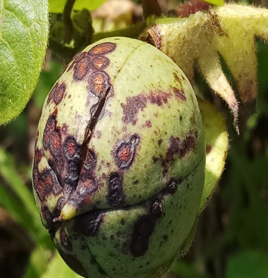
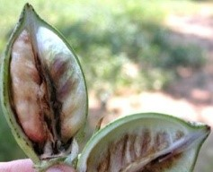

HOME
ABOUT
CONTACT

Alterneria leaf blight:
Symptom:
The fungus infects the seedlings and produces small reddish circular spots on the cotyledons and primary leaves.
The lesions develop on the collar region, stem may be girdled, causing seedling to wilt and die.
In mature plants, the fungus attacks the stem, leading to stem splitting and shredding of bark.
The most common symptom is boll spotting with small water soaked, circular, reddish brown depressed spots on the bolls.
The lint is stained to yellow or brown, becomes a solid brittle mass of fibre.

Boll Rot:
Symptom:
Disease appears as small brown or black dots which later enlarge to cover the entire bolls.
Infection spreads to inner tissues and rotting of seeds and lint occur.
The bolls never burst open and fall off prematurely.
Fruiting bodies of fungi are observed on the bolls .